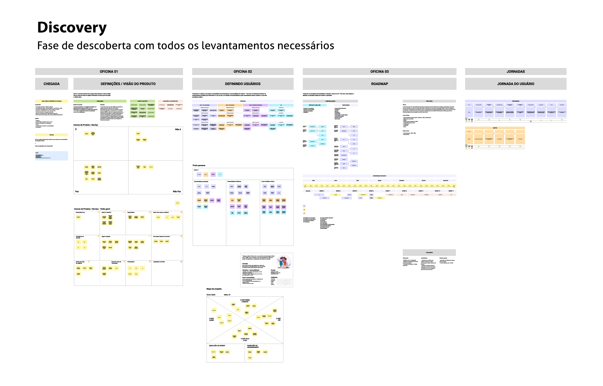
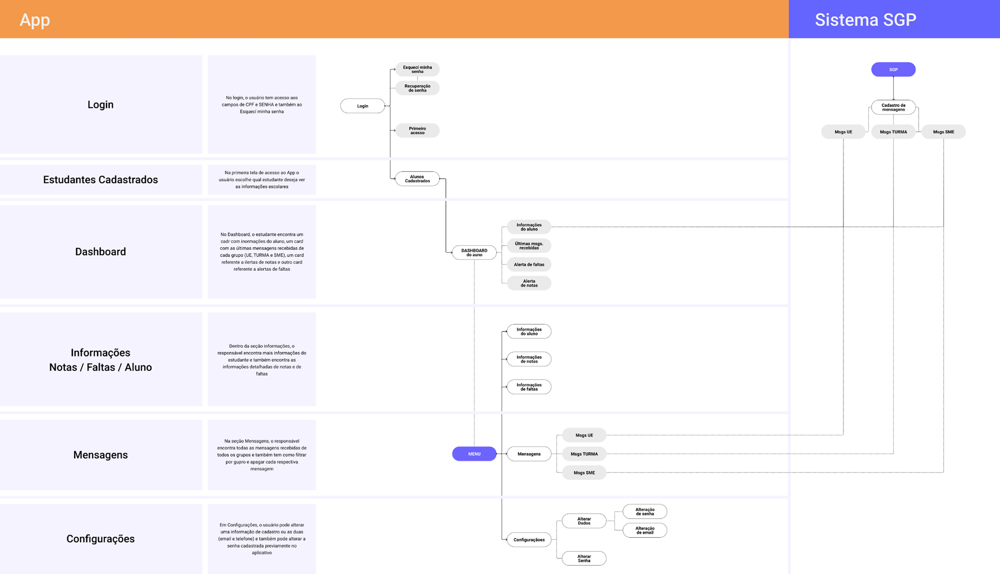
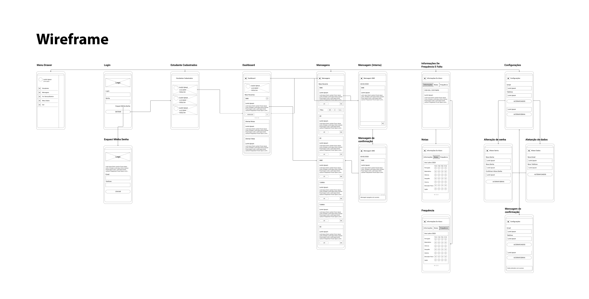
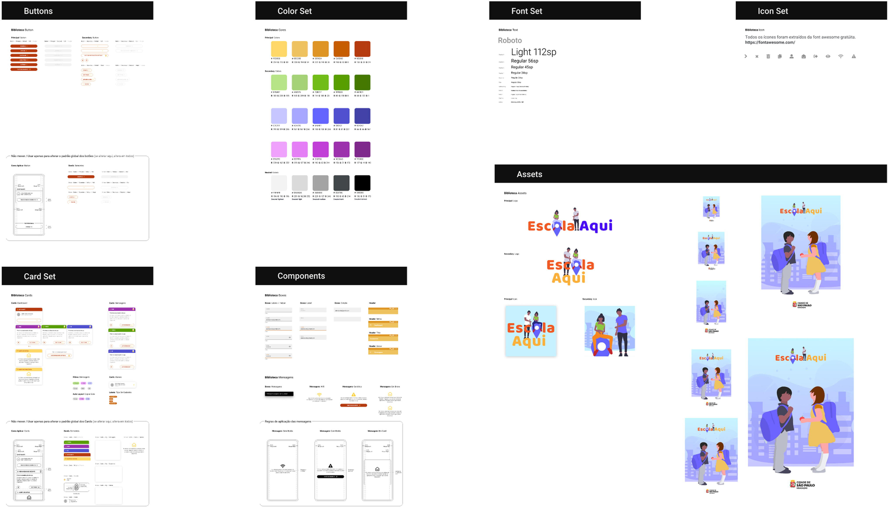

2019
Secretaria municipal de Educação de São Paulo
Este foi um projeto muito interessante, voltado a apoiar pais e professores de toda a rede municipal de ensino de São Paulo. Por meio do aplicativo, ele oferecia informações sobre notas e frequência dos alunos ao longo do ano. Este aplicativo impactou mais de 120.000 famílias e 40.000 professores.
Tags do projeto:
Processo de discovery e design de app
Cenário
A rede municipal de São Paulo tem mais de 120 mil famílias e 40 mil professores, cada escola com seus próprios ritmos e vocabulário. As informações de notas e frequência existiam, mas espalhadas entre o sistema de gestão pedagógica (SGP), os lançamentos dos professores e os comunicados de cada unidade.
Objetivo
Traduzir essa rotina em um aplicativo que qualquer responsável entendesse — sem manual —, organizando notas, faltas e mensagens em uma navegação simples e deixando claro de onde vinha cada informação (da unidade escolar, da turma ou da Secretaria) e o que fazer com ela.
Linha do tempo do projeto
-
01
Descoberta
Oficinas com a SME, proto-personas, mapa de empatia e jornada do usuário. Levantamento das necessidades de famílias, professores e escolas.
-
02
Fluxo do usuário
Desenho do fluxo entre app e SGP — login, seleção do estudante, dashboard, notas, faltas e mensagens — e definição dos casos de tela.
-
03
Wireframes
Baixa fidelidade das telas e dos estados (vazio, erro, confirmação) e testes de usabilidade com responsáveis e professores.
-
04
UI e design system
Design system no Figma: cores, tipografia, componentes, ícones e ilustrações. Interface final das telas e entrega para o desenvolvimento.
Descoberta
Começamos pela descoberta, com três oficinas de trabalho junto à equipe da SME. Na primeira, alinhamos a visão do produto e o que era essencial para o primeiro lançamento; na segunda, construímos as proto-personas — responsáveis, estudantes e professores — e o mapa de empatia de cada uma; na terceira, priorizamos funcionalidades e montamos o roadmap.
Em paralelo, mapeamos a jornada do usuário: o que a família faz hoje para saber de uma nota, onde trava, o que a escola precisa comunicar e em que momento. Esse material virou a base das decisões de fluxo e de conteúdo — não só de tela.

Fluxo do usuário
Com o escopo acordado, desenhei o fluxo simplificado do app conversando com o SGP. Do lado da família: login, seleção do estudante, dashboard com o resumo do ano, informações de notas e faltas, mensagens e configurações. Do lado da escola: a mensagem nasce no SGP e é endereçada à unidade (UE), à turma ou à rede (SME).
Esse desenho deixou explícito o que o app fazia e o que continuava sendo responsabilidade do sistema de gestão. Também definiu os casos de cada tela — aluno cadastrado, sem notas, sem mensagens — antes de qualquer wireframe.

Wireframes
Na baixa fidelidade, testei a estrutura antes de investir no visual: menu drawer, login e recuperação de senha, seleção do estudante, dashboard, mensagens, notas, frequência e configurações. Cada tela foi desenhada nos seus estados — vazio, carregando, erro e confirmação — porque a maior parte das dúvidas das famílias aparece justamente quando não há informação.
Os wireframes também foram o material dos testes de usabilidade com responsáveis e professores. Foi com eles que ajustamos rótulos, a ordem das informações no dashboard e o caminho até a mensagem, antes de partir para a interface final.

UI e design system
Na camada visual, montei o design system no Figma: paleta com escalas de cor para estados e categorias, tipografia Roboto em uma escala única, botões, cards e componentes reutilizáveis, ícones e um kit de ilustrações com os personagens do app.
A ideia era que o app crescesse sem perder consistência: cada tela nova saía dos mesmos tokens e componentes. As ilustrações entraram para deixar o assunto mais leve — o app falava de notas e faltas, mas também de acompanhamento e cuidado.

Aprendizados
Trabalhar em um produto de impacto social muda o peso de cada decisão. Uma palavra mal escolhida no dashboard vira dúvida na casa de milhares de famílias; um estado vazio mal resolvido vira ligação para a escola. Aprendi a testar cedo com quem realmente usa — mães, pais, responsáveis e professores — e a desenhar para o pior cenário (sem nota, sem mensagem, sem dados), não só para a tela do protótipo.
Também saí desse projeto com uma convicção: integração não é detalhe técnico, é experiência. Entender o que vinha do SGP e o que o app fazia com isso foi o que permitiu um fluxo simples para 120 mil famílias.